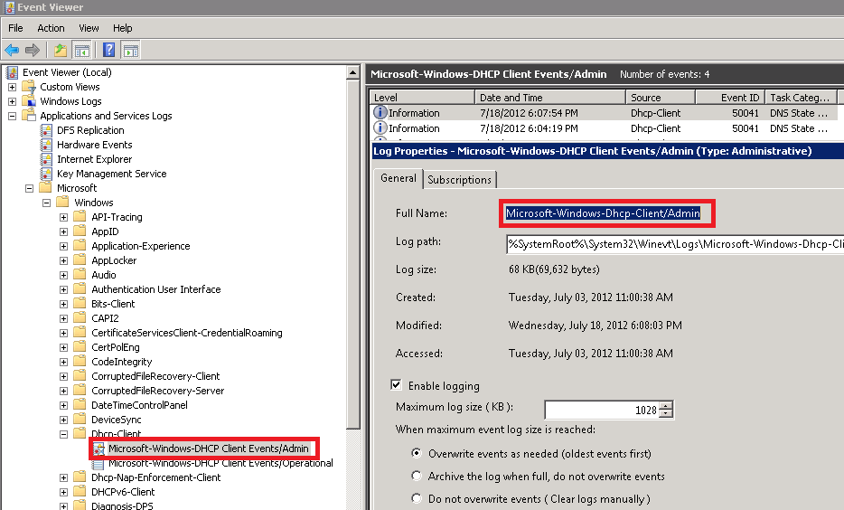

How to force Netwrix Auditor to collect a specific
Applications and Services event log?
When creating a new filter for Event Log Manager, you can select the log name from the drop-down list or enter the name of any custom log. In order to get the log name, please do the following:
When creating a new filter for Event Log Manager, you can select the log name from the drop-down list or enter the name of any custom log. In order to get the log name, please do the following:
- On the server where the log is located, start Event Viewer and navigate to the desired event log.
- Right click on it and select Log Properties.
- On the Properties window, copy Full Name of the event log.

- Paste that name to the Event Log field of the filter: